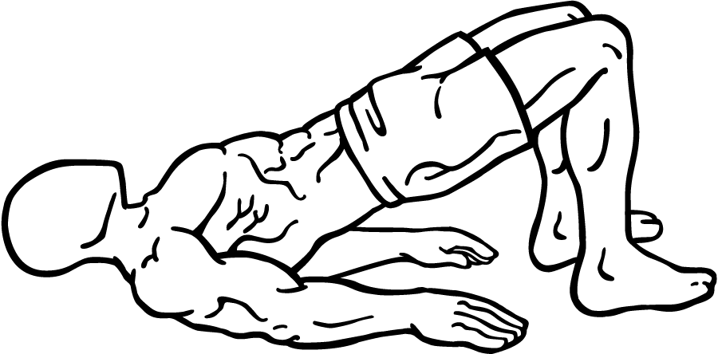
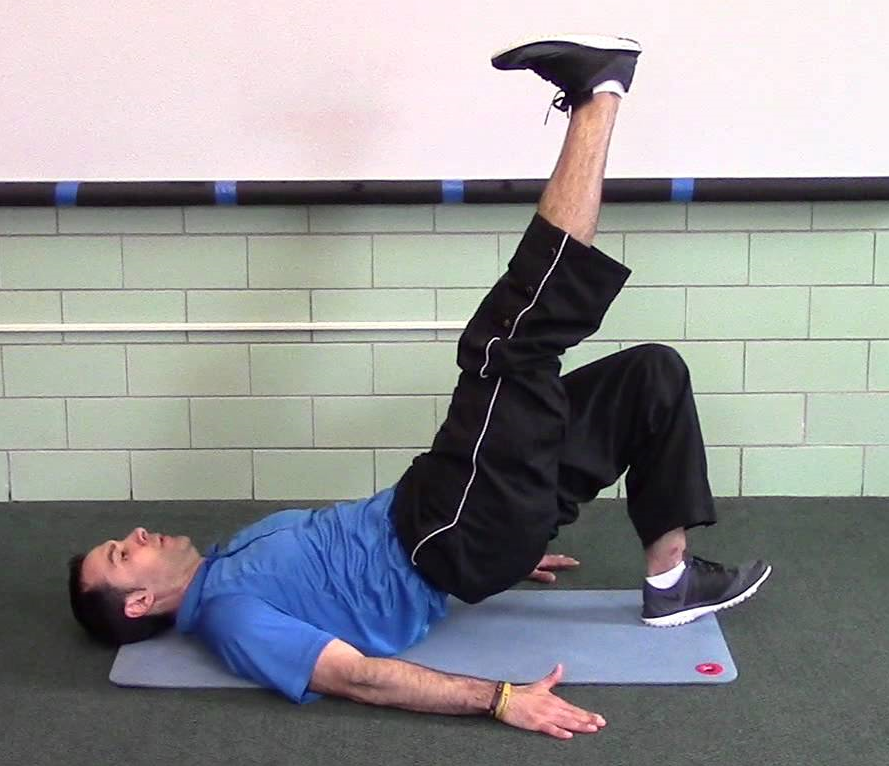
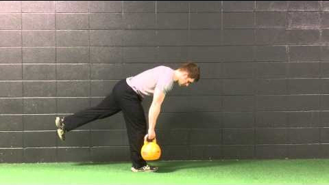

The counterpart to the knee-dominant movements of our lower body training, hip-dominant movements build power and strength in the hips, glutes, and hamstrings. Besides balanced lower body strength, building strength and power in the hips and posterior chain will be of particular importance to sporting and combat athletes, where the hips contribute strongly to the production of power in their sports.
Hip bridges
 A body of movements where the focus is on thrusting the hips when the body is horizontal (on a mat) or almost horizontal (shoulders supported on a bench). Weighted variations exist also, but given we're concerned with bodyweight, the types of movements are made more difficult through how much support is offered by the feet, and whether we do the movement supported with one foot on the ground or two.
Single leg deadlifts
With this movement, we replicate a pulling movement from the floor, akin to the deadlifting exercise. While we can't replicate a weighted deadlift with just our bodyweight; weighted deadlifts often call for a weight that can be several times ones bodyweight, we can adapt the movement.
With the single-legged deadlift, we do that by making it a single limb movement (we support ourselves on just one of our legs). The result is a movement that challenges our balance and flexibility, as well as our strength.